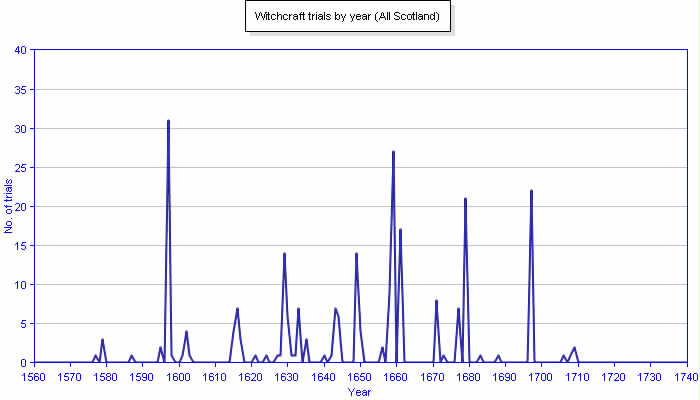

a digital humanities project
by Isabelle Briggs, MLIS '19
✶
 A line graph generated by The Survey of Scottish Witchcraft Database, showing the number of trials per year in Scotland from 1563 to 1736.✶
“Theories as to why the European witch-hunts took place are plentiful, but satisfactory explanations are in short supply. It is no longer convincing to blame men, or the patriarchal system, or the religious upheavals of the Reformation and Counter-Reformation, not to suggest that witch-hunts were a consequence of warfare, famine and disease, or the social and political impact of state-building, or the rise of capitalism. While all of these developments, and many more besides, contributed to the overall story of the witch-hunts in Europe, no single event of episode was, or could be, fully responsible.”
Lizanne Henderson. Witchcraft and Folk Belief in the Age of Enlightenment, Scotland, 1670-1740. Hampshire, England: Palgrave Macmillan, 2016.